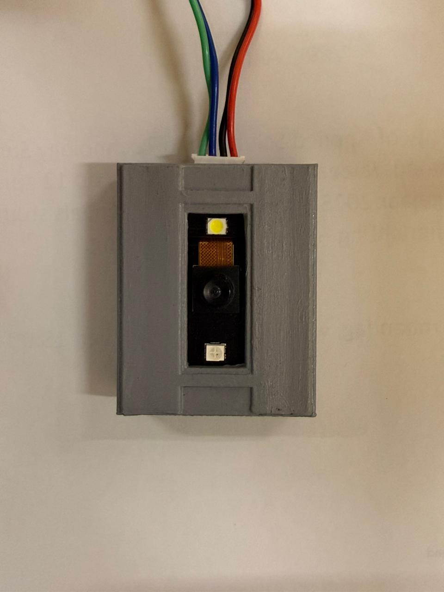
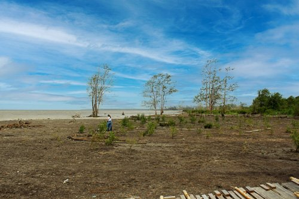
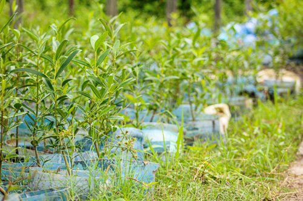
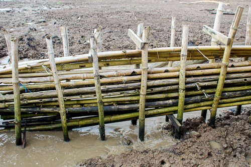

Prototype
We bouwden een eerste werkende opstelling met sensoren, bekabeling en ESP32-aansturing.
ESP32
Sensoren
Prototype
Portfolio work
Een selectie van projecten waarin ik techniek, samenwerking en maatschappelijke betrokkenheid laat zien.
Uitgelicht project
Een technisch groepsproject waarin we een slimme lichtschakelaar bouwden die reageert op handgebaren.
We bouwden een eerste werkende opstelling met sensoren, bekabeling en ESP32-aansturing.

Door te testen zagen we hoe afstand, timing en sensorwaarden invloed hadden op het schakelen.

Het eindresultaat reageert op handgebaren en toont hoe techniek dagelijkse handelingen slimmer kan maken.
Een normale lichtschakelaar vraagt fysiek contact. Wij wilden onderzoeken hoe licht contactloos bediend kan worden.
Met sensoren en een ESP32 maakten we een prototype dat handbewegingen detecteert en daarop reageert.
Ik werkte mee aan het testen, verbeteren en uitleggen van de technische werking binnen het team.
Ik leerde beter logisch denken, testen met echte hardware en samenwerken aan een technische oplossing.
Meer werk
Een duurzaamheidsproject waarbij jongeren samenwerkten aan een groenere omgeving in Suriname.
In samenwerking met SMYLe Suriname Muslim Youth League heb ik deelgenomen aan een duurzaamheidsproject waarbij we bomen hebben geplant in Suriname. Dit initiatief was gericht op het beschermen van het milieu en het vergroten van bewustwording onder jongeren over het belang van natuurbehoud.



Bijdragen aan een groenere omgeving in Suriname en jongeren betrekken bij maatschappelijke projecten.
Ik nam actief deel aan het planten van bomen en werkte samen met andere vrijwilligers.
Er zijn bomen succesvol geplant en de samenwerking tussen jongeren werd versterkt.
Ik leerde hoe teamwork, verantwoordelijkheid en kleine acties samen grote impact kunnen hebben.